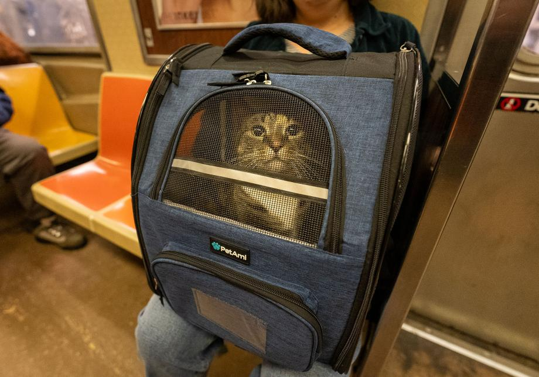
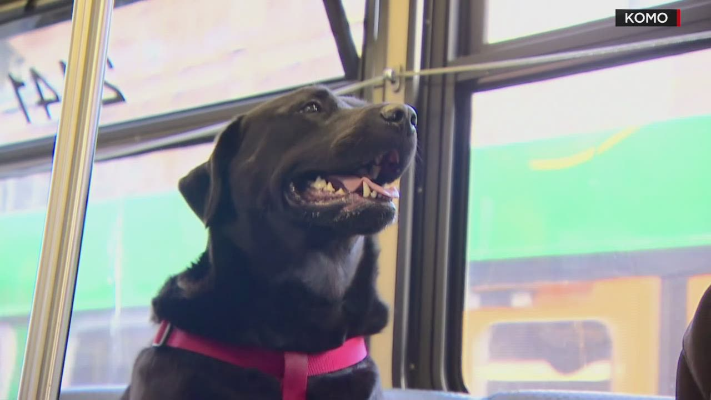

Check the Bus Company's Regulations
Before booking your trip, check the bus company's rules for traveling with pets. Not all bus services allow animals, and those that do may have restrictions regarding pet size, carrier dimensions, fees, and where animals are permitted to sit. Service animals may be subject to different rules from pets. If your journey involves multiple bus companies or connections, make sure you understand the requirements for every part of the trip. Contact the company directly if you are unsure about its policies. Planning ahead helps prevent unexpected problems and ensures that you and your pet are prepared before arriving at the station.

Choose a Secure and Comfortable Carrier
A suitable pet carrier can help keep your furry companion safe and comfortable while traveling by bus. Choose a carrier that meets the bus company's requirements, has secure closures, and provides adequate ventilation. Your pet should have enough room to stand, turn around, and lie down comfortably. Before your trip, introduce your pet to the carrier at home and encourage them to explore it with treats, toys, or familiar bedding. During the journey, keep the carrier secure and follow the company's instructions about where it should be placed. Avoid opening the carrier in busy stations or crowded areas, as an unfamiliar environment may cause your pet to become frightened and try to escape. A properly chosen carrier can make the journey more comfortable for both of you.

Pack Essential Supplies and Plan for Breaks
Even a relatively short bus journey can be tiring for pets, so it's important to bring the supplies they may need. Pack fresh drinking water, a portable water bowl, waste bags, and any necessary medications. If your journey is longer, bring suitable food and plan feeding times around your pet's needs. Avoid giving your pet a large meal immediately before departure if they are prone to motion sickness, and speak with your veterinarian if travel regularly makes them unwell. Remember that bus stops may not provide suitable opportunities for pets to stretch, drink, or relieve themselves, so check the route and plan ahead. Never leave your pet unattended at a stop or allow them to leave the carrier in an unsafe or crowded area. Being prepared can help make the journey smoother and less stressful.
Final Reminder
A safe bus journey starts before you leave home. Confirm that your bus company permits your pet, choose a suitable carrier, and pack fresh water and other essential supplies. Keep your pet secure and supervised throughout the journey, and plan ahead for any stops or transfers. With a little preparation, you can help make bus travel a more comfortable experience for both you and your furry companion. Happy travels!